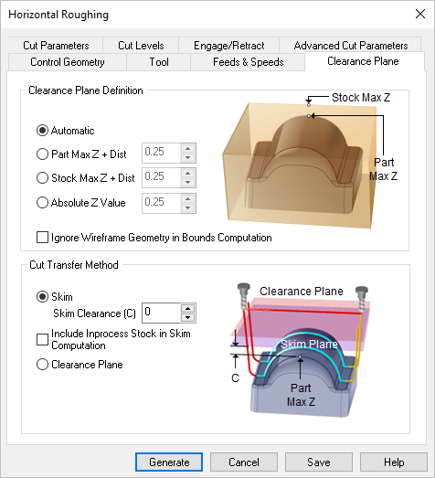
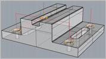

The following dialog allows you to select the appropriate Clearance Geometry for the current 2½ Axis Hole Making operation. In this tab, Clearance Plane and Cut Transfer parameters can be specified. See Clearance Plane for additional information.
 Dialog Box: Clearance Plane tab, similar for all Milling operations |
Automatic Allow the system to calculate a the clearance plane height automatically based on the part and stock geometry.
Part Max Z + Dist Set the Clearance Plane height to the maximum Z height of the Part plus this added distance.
Stock Max Z + Dist Select this option to use the Stock's Maximum Z height and then enter a Distance value to add to this for the total Z height for the Clearance Plane.
Absolute Z Value Select this to specify the absolute Z clearance height to use and then enter Z height value. Be sure that the value you specify clears your part geometry.
Ignore Wireframe Geometry in Bounds Computation Check this box to ignore all wireframe geometry when calculating the Clearance Plane definition. When checked, the Automatic and Part Max options for defining the Clearance will be calculated from actual surface geometry. |


This section allows you to control the tool's motions when it needs transfer to another region to begin cutting. Clearance Plane Select this option to move the tool to the Clearance Plane and then perform the Transfer motion to the next cut location.
Skim Select this option to perform transfer motions at a Skim plane. The system automatically determines a safe height and then adds this Skim Clearance (C) to the computed Z value to perform the Transfer Motions.
 Skim Clearance for 2 Axis Hole Making |